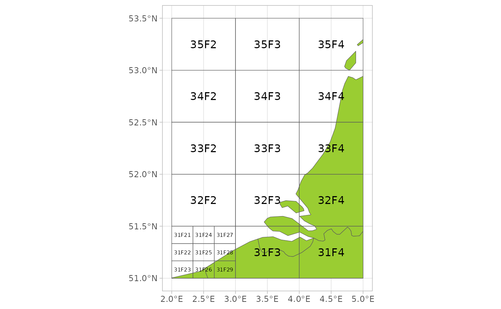
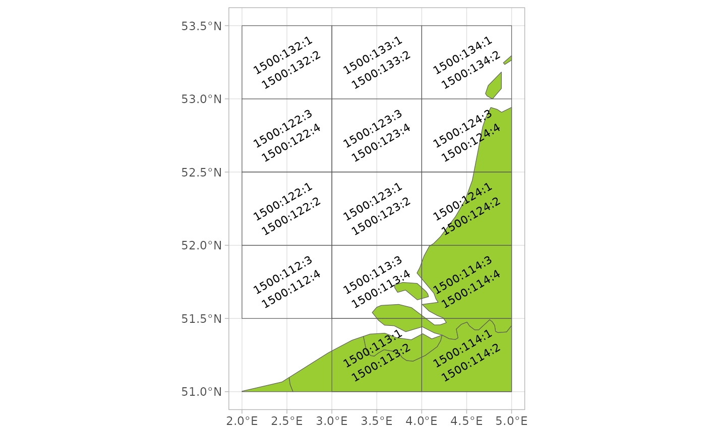

ICES Statistical Rectangles
Support for ICES rectangles is experimental
[ICES statistical rectangles][ices-rect] [ices-rect]: https://en.wikipedia.org/wiki/ICES_Statistical_Rectangles
is a notation system developed by the International Council for the
Exploration of the Sea (ICES). The packages allows you to convert the
notation into a sf object. The
example and illustration below shows a small subset of ICES rectangles
and subrectangles.
library(sf)
my_ices_codes <-
c("31F21", "31F22", "31F23", "31F24", "31F25", "31F26", "31F27",
"31F28", "31F29", "32F2", "33F2", "34F2", "35F2", "31F3", "32F3",
"33F3", "34F3", "35F3", "31F4", "32F4", "33F4", "34F4", "35F4")
my_ices_rects <- ices_rectangles(my_ices_codes)
Coastline derived from Natural Earth
ICES subrectangles divide the parent ICES rectangle into 3 by 3 equal rectangles. Unfortunately, this makes the subrectangles incompatible with Csquares as those divide parent rectangles into 2 by 2 or 10 by 10 equal rectangles. The csquares package offers some helper functions to convert ICES rectangles to csquares and vice versa. The example below show how to get the corresponding csquares codes for the requested ICES rectangles.
library(dplyr)
ices_csq <-
## Note that ICES subrects return empty csquares
ices_to_csquares(my_ices_codes) |>
## Remove empty csquares as those can not be converted into geometries
filter(!is.na(csquares)) |>
## add geometries
st_as_sf()
#> Warning: Input contains ICES subrectangles which are incompatible with
#> csquares.The subrectangles produces NA values and shows a
warning. This yields the csquares as depicted below.
ggplot(ices_csq) +
geom_sf(data = coast, fill = "yellowgreen") +
geom_sf(fill = "transparent") +
geom_sf_text(aes(label = gsub("|", "\n", as.character(csquares),
fixed = TRUE)), angle = 30, size = 3) +
labs(x = NULL, y = NULL)
Coastline derived from Natural Earth
We can easily get the ICES rectangles that correspond with those csquares using:
ices_from_csquares(ices_csq)
#> [1] "32F2" "33F2" "34F2" "35F2" "31F3" "32F3" "33F3" "34F3" "35F3" "31F4"
#> [11] "32F4" "33F4" "34F4" "35F4"We get the same ICES rectangles that we started with, except for the subrectangles which are incompatible.